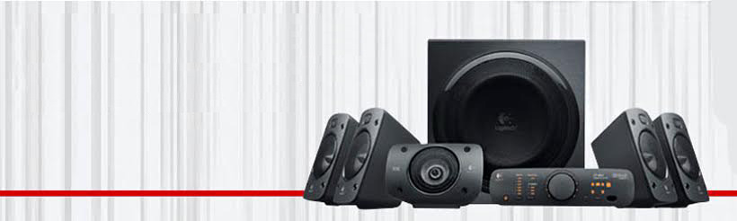

What Makes Us Tick!
At uCorp, we believe world-class audio experiences should be within everyone’s reach. Our speakers, subwoofers and SoundPath audio accessories refute the notion that exceptional sound quality has to be ridiculously expensive. The uCorp design approach involves a fusion of leading edge technology, precision engineering, exhaustive lab and real-world testing, as well as, a deep personal passion for audio excellence, all brought to life by our acoustic engineers. With every new product, we strive to redefine audio performance for the price.
